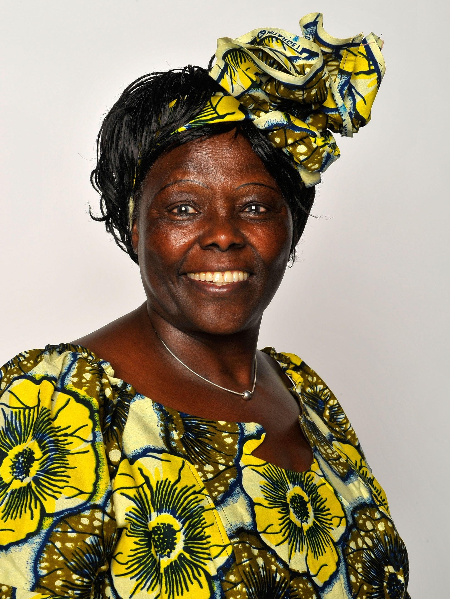
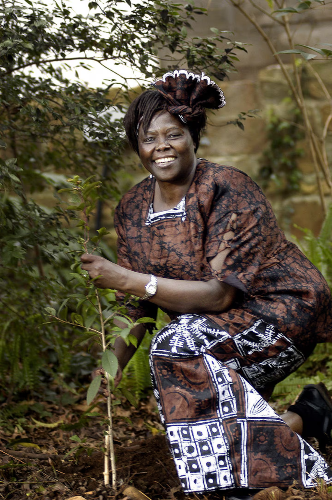
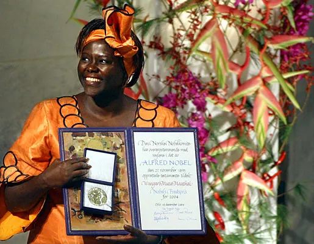
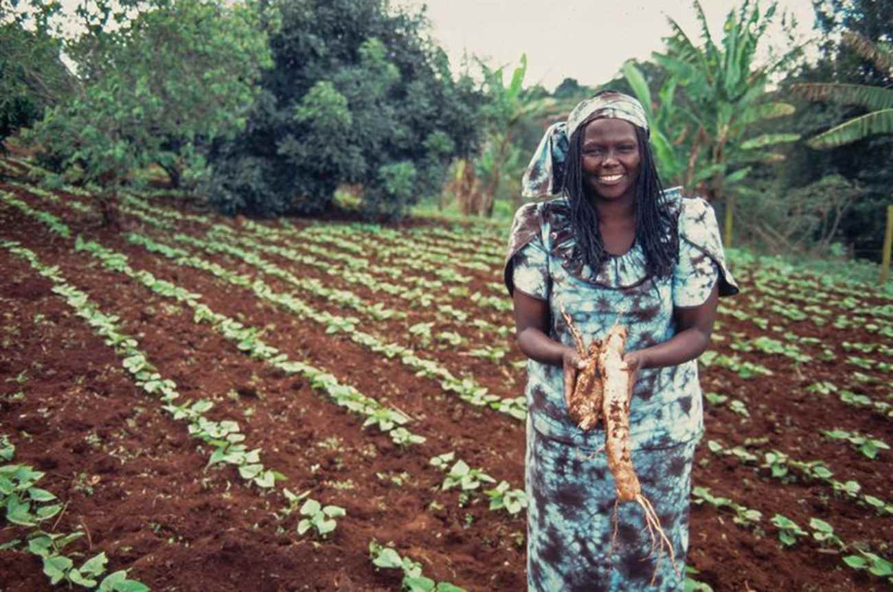
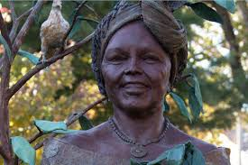

1940
Wangari Maathai nasce em Nyeri, Quênia, durante era colonial. Cresce em contexto onde educação de mulheres era limitada, mas demonstra brilho excepcional desde infância.

"É a soma das pequenas coisas que os cidadãos fazem que transforma o mundo. A minha pequena coisa é plantar árvores."
Wangari Maathai
Imagem associada ao artigo sobre Wangari Maathai, mulher africana e ativista ambiental reconhecida por sua luta pela preservação da vida e da natureza. Fonte: Revista Afirmativa.
Trajetória de uma mulher que plantou sementes de esperança e transformação ambiental global

Foto: Charley Gallay/Getty Images, via UOL Ecoa.
Wangari Maathai nasceu em 1940 em Nyeri, no Quênia, durante a era colonial. Cresceu em um país sob dominação britânica, em contexto onde mulheres eram frequentemente relegadas a papéis secundários e educação formal era privilégio. Apesar das barreiras de gênero e de colonialismo, Wangari demonstrou desde jovem brilho intelectual excepcional. Obteve educação em escolas no Quênia e depois nos Estados Unidos, onde estudou biologia. Retornando ao Quênia após sua formação, trabalhou como cientista, pesquisadora e professora universitária — posição rara para mulheres em seu país. Porém, percebia crescentemente que conhecimento científico isolado era insuficiente para resolver os profundos problemas ambientais e sociais que o Quênia enfrentava.
Wangari Maathai transformou sua expertise científica em ativismo ambiental radical. Em 1977, fundou o Green Belt Movement — organização que combinava plantio de árvores com luta pelos direitos ambientais e das mulheres. Seu movimento não era meramente ambientalista: era político e feminista, questionando modelos de desenvolvimento que destruíam florestas, deslocavam comunidades e enriqueciam elites à custa de povos vulneráveis e do meio ambiente. Wangari enfrentou violência estatal, prisão, tortura, mas nunca abandonou sua visão de que proteção ambiental e justiça social eram inseparáveis. Seu trabalho revolucionou pensamento ambiental global, provando que mulheres — especialmente mulheres africanas — eram capazes não apenas de teorizar sobre problemas, mas de organizarem movimentos transformadores. Wangari Maathai foi a primeira mulher africana a receber o Prêmio Nobel da Paz em 2004, reconhecimento de sua contribuição singular à luta ambiental global.
Wangari Maathai nasce em Nyeri, Quênia, durante era colonial. Cresce em contexto onde educação de mulheres era limitada, mas demonstra brilho excepcional desde infância.
Wangari estudia em escolas no Quênia e depois nos Estados Unidos. Obtém diploma em biologia e retorna ao Quênia para trabalhar como cientista e professora universitária — posição raramente ocupada por mulheres em seu país.
Wangari percebe que degradação ambiental está diretamente conectada com exploração econômica, deslocamento de comunidades, e pobreza. Começa a articular visão de que ativismo ambiental deve ser inseparável de justiça social.
Wangari funda o Green Belt Movement (Movimento da Cintura Verde), organização que combina plantio de árvores com luta pelos direitos ambientais, direitos das mulheres, e autodeterminação comunitária.
Wangari enfrenta violência estatal crescente por seu ativismo. É presa, torturada, mas continua liderando Green Belt Movement. Seu trabalho ganha reconhecimento internacional como modelo de ativismo ambiental radical.
Wangari amplia alcance de sua luta. Participa de conferências internacionais, viaja pelo mundo, articula redes globais de ativismo ambiental. Green Belt Movement continua plantando milhões de árvores e organizando comunidades.
Wangari Maathai recebe Prêmio Nobel da Paz — primeira mulher africana a receber essa honraria — em reconhecimento de sua contribuição singular ao ativismo ambiental e pelos direitos humanos.
Wangari Maathai falece em 2011, deixando legado de milhões de árvores plantadas, movimentos sociais transformados, e novo paradigma de ativismo ambiental centrado em justiça social e direitos das mulheres.

Foto: Gianluigi Guercia/AFP/Getty Images, via The Boston Globe.
Wangari Maathai é extraordinária porque viveu em Quênia — país que enfrentava pressão intensa de corporações multinacionais, governos corruptos, e modelos de desenvolvimento predatórios — e ousou não apenas denunciar essas forças, mas organizar resistência a elas. Enquanto economistas e políticos justificavam destruição ambiental como "necessária para desenvolvimento", Wangari provou que outro caminho era possível. Green Belt Movement não era apenas organização ambiental — era movimento político que questionava poder, que empoderava mulheres, que afirmava que comunidades locais devem ter voz em decisões sobre seus próprios territórios.
O que torna Wangari ainda mais notável é sua compreensão precoce de que ativismo ambiental sem justiça social é incompleto. Ela recusou-se a ser apenas ambientalista técnica — uniu plantio de árvores com educação política, com organização comunitária, com feminismo. Sua presença em espaços de poder — conferências internacionais, prêmios globais — era afirmação de que mulheres, especialmente mulheres africanas, eram capazes de não apenas participar em decisões globais, mas de liderá-las.
Além disso, Wangari desafiou violência estatal, prisão, tortura, e permaneceu inabalável em sua missão. Sua coragem física — enfrentar forças repressivas do Estado — é tão notável quanto sua coragem intelectual e moral. Wangari Maathai mostrou que uma mulher sozinha, equipada com visão clara e compromisso inabalável, poderia mobilizar movimentos sociais capazes de transformar realidades nacionais e globais. Por tudo isso, ela não é apenas ativista ambiental importante, mas figura singular que reconfigurou como o mundo entende a conexão entre meio ambiente, justiça social, direitos humanos, e libertação feminina.
Influência sobre ativismo ambiental global, feminismo ecológico, e paradigmas de desenvolvimento justo.
O legado de Wangari Maathai está em transformação fundamental de como o mundo compreende a relação entre meio ambiente e justiça social. Seu trabalho provou que não é possível proteger florestas sem proteger pessoas, que desenvolvimento genuíno deve ser centrado nas necessidades de comunidades locais, não em lucro corporativo. Green Belt Movement plantou mais de 50 milhões de árvores e organizou centenas de comunidades em volta de princípios de sustentabilidade ambiental e dignidade humana. Esse impacto material — concreto, mensurável — fez com que movimentos ambientais globais começassem a levar a sério a integração entre ambientalismo e justiça social.
Além disso, Wangari Maathai estabeleceu a liderança de mulheres — particularmente mulheres do Sul Global — como central para ativismo ambiental. Seu reconhecimento com Prêmio Nobel da Paz elevou visibilidade internacional de movimentos liderados por mulheres africanas e sul-globais. Hoje, feminismo ecológico — compreensão de que opressão de mulheres está conectada com opressão da natureza, que libertação feminina requer libertação ecológica — é campo central em pensamento ativista global. Isso deve muito a Wangari, que viveu essas conexões antes de serem teoricamente formuladas. Seu legado continua inspirando gerações de ativistas ambientais e feministas que buscam transformação não apenas ecológica, mas profundamente social e política. Wangari nos ensinou que plantar árvores é ato político revolucionário quando combinado com luta por justiça.
Fotos e registros históricos.

Wangari Muta Maathai, ambientalista, professora e ativista política queniana, foi a primeira mulher africana a receber o Prêmio Nobel da Paz. Sua trajetória ficou marcada pela criação do Movimento Cinturão Verde, que uniu preservação ambiental, participação das mulheres e luta por democracia.
Fonte: Revista Galileu

Wangari Maathai em meio a uma área de cultivo, simbolizando sua atuação na defesa do meio ambiente, do reflorestamento e do por meio do Movimento Cinturão Verde, iniciativa criada em 1977 e responsável pelo plantio comunitário de milhões de árvores.
Fonte: Combate Racismo Ambiental

Estátua de Wangari Maathai localizada no Benedictine College, em Atchison, Kansas, nos Estados Unidos. A homenagem celebra sua trajetória como ambientalista, ativista pela democracia e primeira mulher africana a receber o Prêmio Nobel da Paz.
Fonte
Livros, artigos e documentos históricos.
Biografia oficial do Nobel usada para nascimento, formação, carreira acadêmica, Green Belt Movement, atuação pública e Nobel da Paz. Link: https://www.nobelprize.org/prizes/peace/2004/maathai/biographical/
Página oficial sobre a concessão do Nobel da Paz a Wangari Maathai por desenvolvimento sustentável, democracia e paz. Link: https://www.nobelprize.org/prizes/peace/2004/maathai/facts/
Discurso do Nobel usado para temas como democracia, sustentabilidade, paz, mulheres e responsabilidade coletiva. Link: https://www.nobelprize.org/prizes/peace/2004/maathai/lecture/
Fonte sobre a fundação do movimento em 1977, plantio comunitário de árvores, mulheres, educação ambiental e democracia. Link: https://greenbeltmovement.org/who-we-are/history
Fonte universitária sobre formação acadêmica, doutorado, docência, carreira pública, morte e legado institucional. Link: https://wmi.uonbi.ac.ke/node/359
Perfil da ONU Meio Ambiente sobre seu papel como fundadora do Green Belt Movement, defensora ambiental e Nobel da Paz. Link: https://www.unep.org/championsofearth/laureates/2006/wangari-maathai
Fonte sobre o Right Livelihood Award, participação de mulheres, reflorestamento, conservação e desenvolvimento sustentável. Link: https://rightlivelihood.org/the-change-makers/find-a-laureate/wangari-maathai/
Fonte sobre sua participação na criação da Nobel Women's Initiative e a relação entre paz, justiça e direitos das mulheres. Link: https://www.nobelwomensinitiative.org/laureate/wangari-maathai/
Fonte editorial sobre a autobiografia Unbowed e sua narrativa sobre infância, formação, ativismo ambiental e democracia. Link: https://www.penguinrandomhouse.com/books/297874/unbowed-by-wangari-maathai/
Fonte sobre o documentário que retrata Wangari Maathai, o Green Belt Movement, resistência ambiental e democracia no Quênia. Link: https://takingrootfilm.com/
Conheça outras trajetórias marcantes da luta por justiça e transformação social.

Foto: John Mathew Smith / www.celebrity-photos.com, via Wikimedia Commons.
Simbolo da luta contra a segregação racial nos Estados Unidos e referência mundial em coragem civil.
Saiba mais
Imagem: representação de Bartolina Sisa em cédula boliviana — via Banco Central da Bolívia.
Estrategista quilombola cuja resistência ajudou a marcar a luta negra por liberdade no Brasil lorem.
Saiba mais
Imagem: representação de Bartolina Sisa em cédula boliviana — via Banco Central da Bolívia.
Intelectual fundamental para os debates sobre feminismo negro, cultura e desigualdade racial no Brasil.
Saiba mais
Imagem: representação de Bartolina Sisa em cédula boliviana — via Banco Central da Bolívia.
Liderança indigêna e jurista que ampliou a presença dos povos originários nos espaços de decisão.
Saiba mais